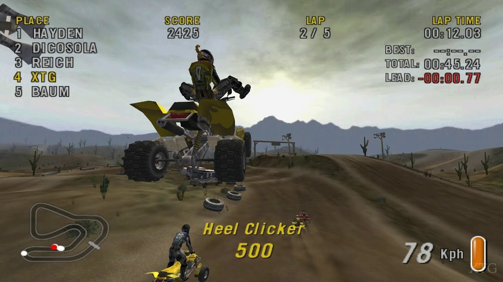
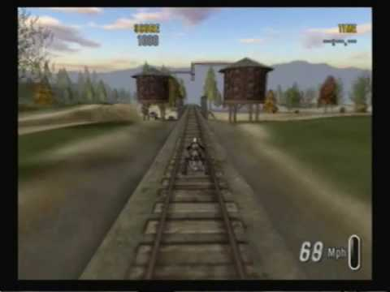

We've got the Keys
"A sure fire way to ruin friendships" -IGN
One of the most iconic staples of 2000s gaming were niche extreme sports games. At the top of the pile was ATV Offroad Fury 2, a masterpiece with amazing music and stellar level design. The game really shined in its multiplayer mode, which offered the absolutely innovative tag mode.

Huge Air
Quite literally some of the biggest air you've ever seen
You can drive your ATV off an actual ski jump.

Iconic Design
The pinnacle of level and sound design
ATV Offroad Fury 2 has some of the most iconic level features. Besides big jumps, who could forget the train tracks. There is no way you didn't feel like a badass while driving on those tracks. The level design is only surpassed by the music, which is headlined by the hit single "The Key to Gramercy Park".